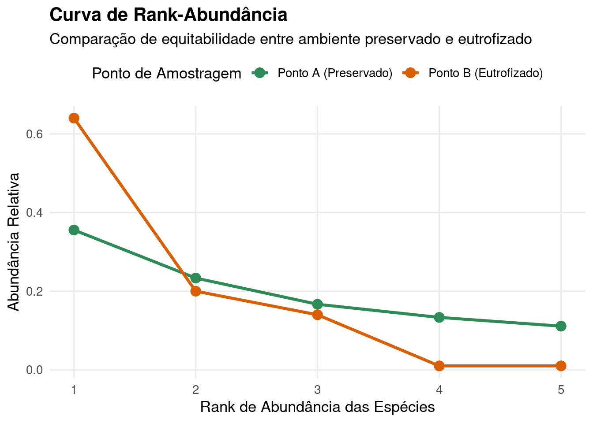
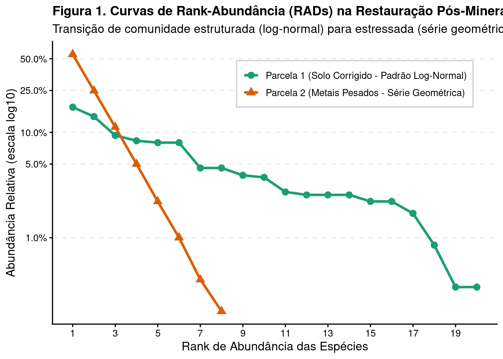
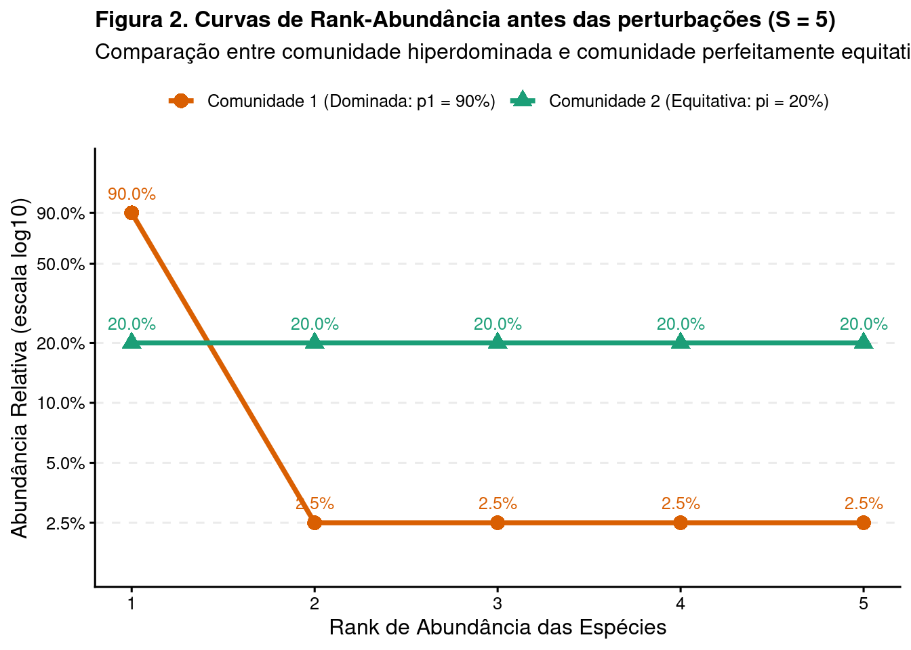
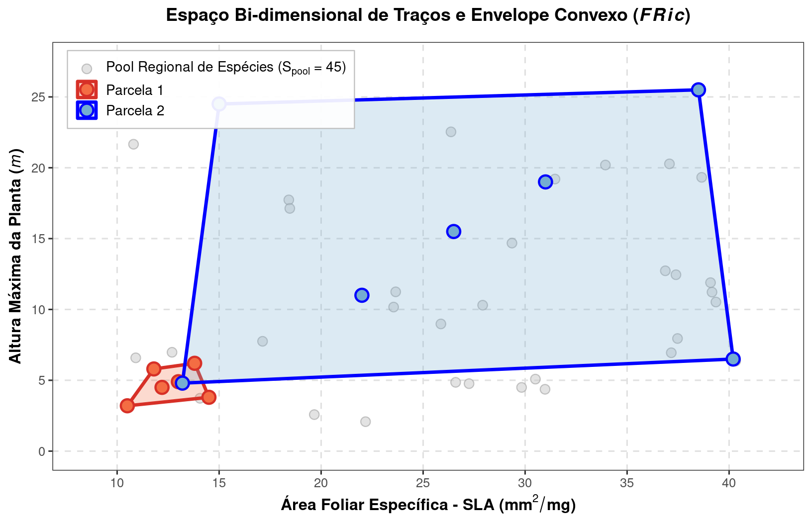
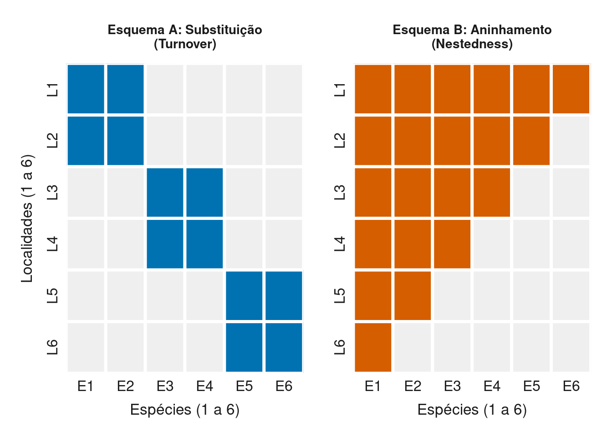
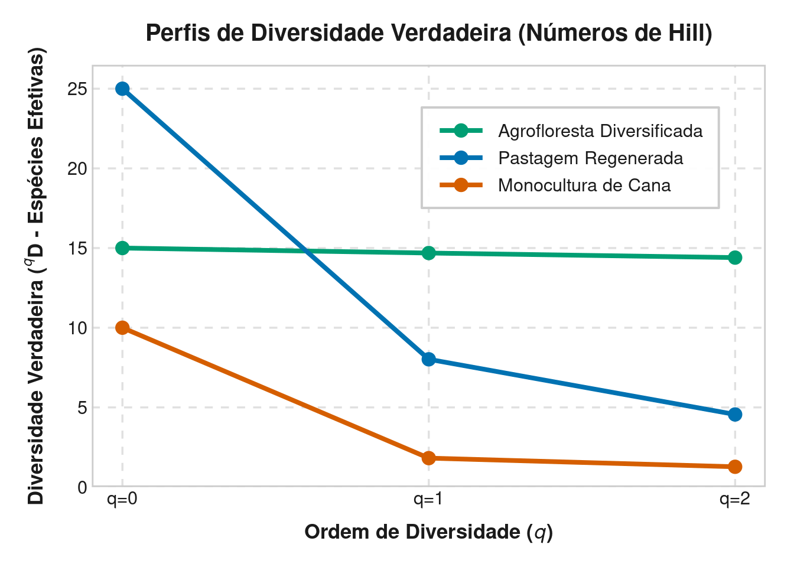

Prova 2 - Ecologia de Comunidades
Questão 1: Descrição de comunidades por curvas de rank-abundância
Em um programa de biomonitoramento aquático, ecólogos amostraram a comunidade de macroinvertebrados bentônicos em dois pontos de um reservatório: o ponto a (área de nascente preservada) e o ponto b (área próxima ao lançamento de efluente urbano). em ambos os pontos foram coletados exatamente 100 indivíduos e registrada uma riqueza de 5 espécies (\(S = 5\)).
a tabela a seguir apresenta as contagens de abundância absoluta (\(n_i\)) obtidas:
| ponto de amostragem | espécie 1 | espécie 2 | espécie 3 | espécie 4 | espécie 5 |
|---|---|---|---|---|---|
| ponto a (preservado) | 32 | 21 | 15 | 12 | 10 |
| ponto b (eutrofizado) | 1 | 64 | 14 | 20 | 1 |
o gráfico a seguir ilustra as curvas de distribuição de abundância relativa (rads) obtidas para os dois pontos:
Com base na análise dos dados da tabela e do gráfico, assinale a alternativa correta:
- O ponto a apresenta alta dominância da “espécie 1”, enquanto noo ponto b a dominância da “espécie 1” é menor.
- Como ambas as comunidades possuem a mesma riqueza observada (\(S = 5\)), pode-se concluir que o lançamento de efluente no ponto b não causou um impacto significativo na estrutura da comunidade bentônica.
- Houve mudanças tanto no grau de dominância quanto no ranqueamento das espécies entre os pontos, sugerindo mudanças importantes na estrutura da comunidadee do ponto b devido ao recebimento de efluentes.
- A curva do ponto a indica que a comunidade está sob forte estresse ambiental, pois curvas mais horizontais ocorrem exclusivamente em ecossistemas altamente degradados.
- A proporção relativa de indivíduos (\(p_i\)) no ponto b não pode ser calculada sem antes aplicar uma transformação logarítmica às abundâncias brutas.
Questão 2: Contaminação de solos e estruturação de comunidades
Durante a restauração ecológica de uma área degradada por mineração, duas parcelas foram monitoradas: a parcela 1 (solo corrigido com matéria orgânica) e a parcela 2 (solo sem correção, contendo alta concentração de metais pesados). A observação das curvas rads (figura 1) revelou uma transição do padrão log-normal (suave) para o padrão de série geométrica (íngreme) na parcela 2.

Assinale a alternativa que explica corretamente o mecanismo ecológico por trás dessa alteração na inclinação da curva:
- A presença de metais pesados aumenta a partição estocástica de nichos entre todas as espécies, promovendo um aumento na equitabilidade.
- O modelo de série geométrica (íngreme) surge porque a competição interespecífica na parcela 2 foi signficativamente reduzida pela adição de metais pesados.
- A comunidade no solo corrigido possui taxas relativamente similares de nascimento e morte fazendo com que compitam entre si, gerando diferenças pequenas nas dominâncias.
- A contaminação do solo atua como um filtro abiótico severo, permitindo que uma ou poucas espécies tolerantes monopolizem os recursos iniciais, gerando alta dominância e reduzindo a equitabilidade da comunidade.
- A inclinação da curva de abundância relativa depende do número de espécies amostradas, e como a parcela 2 (contaminada por metais) obteve menos espécies, temos maior probabilidade de observar padrão íngreme da curva que sugere dominância.
Questão 3: Índices clássicos de diversidade (\(\alpha\)) e sensibilidade à dominância
Um ecólogo comparou a diversidade \(\alpha\) de duas parcelas florestais (parcela x e parcela y), ambas com riqueza de 5 espécies (\(S = 5\)) e abundância total de 100 indivíduos (\(N = 100\)):
parcela x (floresta primária): 20 indivíduos de cada uma das 5 espécies (\(p_i = 0,20\) para todas as espécies).
parcela y (floresta secundária): 80 indivíduos da espécie 1 (\(p_1 = 0,80\)) e 5 indivíduos de cada uma das espécies 2, 3, 4 e 5 (\(p_2 = p_3 = p_4 = p_5 = 0,05\)).
Ao calcular a dominância de simpson (\(D = \sum p_i^2\)) e a Diversidade de simpson (\(1 - D\)) para a parcela y, assinale a alternativa que apresenta os valores corretos e a interpretação ecológica adequada:
- A diversidade de Simpson na parcela y é \(1 - D = 0,650\), indicando que a parcela y é mais diversa e equitativa do que a parcela x.
- A dominância na parcela y é \(D = 0,650\), resultando em uma diversidade de simpson de \(1 - D = 0,350\), o que reflete uma queda drástica em relação à parcela x (\(1 - D = 0,800\)) devido ao peso quadrático conferido à espécie hiperdominante.
- A dominância de Simpson na parcela y é \(D = 0,200\), pois o índice de simpson ignora a abundância das espécies hiperdominantes.
- A diversidade de Simpson resulta em \(1 - D = 0,000\) para qualquer comunidade que apresente muitas espécies raras em sua composição.
- A equitabilidade da parcela y é exatamente igual a \(1,00\), pois a equitabilidade depende apenas da riqueza total observada.
Questão 4: Sensibilidade de Shannon e Simpson à perda de espécies dominantes e raras
Um ecólogo monitorou duas comunidades aquáticas com a mesma riqueza (\(S = 5\) espécies) e abundância relativa total (\(100\%\)), ilustradas nas curvas de rank-abundância (figura 2):
- comunidade 1 (dominada): a espécie 1 concentra \(90\%\) dos indivíduos (\(p_1 = 0,90\)), enquanto as espécies 2, 3, 4 e 5 possuem \(2,5\%\) cada (\(p_2 = p_3 = p_4 = p_5 = 0,025\)).
- comunidade 2 (equitativa): todas as 5 espécies possuem exatamente \(20\%\) dos indivíduos (\(p_1 = p_2 = p_3 = p_4 = p_5 = 0,20\)).

para testar o comportamento matemático dos índices de shannon (\(H' = -\sum p_i \ln p_i\)) e de diversidade de simpson (\(1 - D = 1 - \sum p_i^2\)), o pesquisador simulou dois cenários de extinção local (recalculando as novas proporções \(p_i\) sobre os indivíduos sobreviventes):
Cenário a: perda da espécie 1 na duas comunidades. Cenário b: perda das espécies 4 e 5 nas duas comunidades.
valores de suporte para cálculo: \(\ln(3) = 1,099\); \(\ln(4) = 1,386\); \(\ln(5) = 1,609\); na comunidade 1 intacta, \(H' = 0,464\) e \(1 - D = 0,188\); no cenário b da comunidade 1, \(H' = 0,242\) e \(1 - D = 0,102\).
Com base nos cálculos para os dois cenários e na sensibilidade matemática de cada índice, assinale a alternativa correta:
- Na comunidade 2, a perda das duas espécies (cenário b) reduz a diversidade de Simpson de \(0,800\) para \(0,100\), demonstrando que o índice de simpson é mais sensível à perda de espécies raras do que à perda de espécies dominantes.
- Na comunidade 1 , a perda das duas espécies mais raras (cenário b) provoca uma queda drástica na diversidade de simpson (de \(0,188\) para \(0,010\)), enquanto o índice de shannon (\(H'\)) permanece praticamente inalterado em \(0,460\).
- Em ambas as comunidades, a perda da espécie 1 reduz o índice de shannon (\(H'\)) para próximo de \(0,000\), pois o cálculo de entropia depende majoritariamente da espécie de rank 1.
- Na comunidade 2, a perda da espécie 1 (cenário a) eleva a diversidade de simpson de \(0,800\) para \(0,950\), pois a remoção de qualquer espécie aumenta a equitabilidade do sistema.
- Na comunidade 1, a perda da espécie mais abundante (cenário a) faz a diversidade de simpson saltar de \(0,188\) para \(0,750\) (aumento de \(300\%\)), enquanto a perda das duas espécies mais raras (cenário b) quase não altera o simpson (\(0,102\)), mas reduz o índice de shannon (\(H'\)) quase pela metade (de \(0,464\) para \(0,242\)), comprovando que Simpson responde fortemente às espécies dominantes e Shannon é mais sensível às espécies raras.
Questão 5: Média ponderada da comunidade (cwm) e filtro abiótico
Em um estudo ao longo de um gradiente altitudinal em uma montanha tropical, pesquisadores mensuraram o traço funcional de área foliar específica (\(SLA\), em \(mm^2/mg\)) em três espécies dominantes de plantas: espécie a (\(SLA = 35\)), espécie b (\(SLA = 30\)) e espécie c (\(SLA = 25\)).
A área específica foliar (SLA) é uma relaçao entre área de folha pela massa… altos valores de SLA são folhas mais baratas, com pouca área por unidade de massa. Folhas mais caras metabolicamente são mais deffendidas e possuem menos área por unidades de massa, são menos eficientes na fotossíntese mas costumam ser mais longevas.
As abundâncias relativas observadas em dois pontos do gradiente foram:
baixa altitude (ambiente úmido e sombreado): espécie a = \(50\%\) (\(p_A = 0,50\)), espécie b = \(30\%\) (\(p_B = 0,30\)), espécie c = \(20\%\) (\(p_C = 0,20\)).
topo de montanha (ambiente frio, com ventos e seca fisiológica): espécie a = \(5\%\) (\(p_A = 0,05\)), espécie b = \(15\%\) (\(p_B = 0,15\)), espécie c = \(80\%\) (\(p_C = 0,80\)).
Agora, sabendo que a média ponderada da comunidade é calculada por \(\text{CWM} = \sum p_i \times t_i\), assinale a alternativa que apresenta o valor correto da CWM no topo de montanha e a sua interpretação ecológica:
- \(\text{CWM}_{\text{Topo}} = 26,25\text{ }mm^2/mg\), demonstrando uma redução em relação à baixa altitude (\(\text{CWM}_{\text{Baixa}} = 31,50\text{ }mm^2/mg\)) provocada pela seleção ambiental de folhas mais espessas e coriáceas (menor SLA) para suportar o frio e o vento.
- \(\text{CWM}_{\text{Topo}} = 35,00\text{ }mm^2/mg\), indicando que o topo da montanha seleciona plantas com maior área foliar para maximizar a fotossíntese.
- \(\text{CWM}_{\text{Topo}} = 30,00\text{ }mm^2/mg\), pois a CWM é calculada tirando a média aritmética simples dos traços, sem considerar a abundância das espécies.
- a redução da CWM no topo de montanha indica um aumento na competição interespecífica por luz entre as plantas de pequeno porte.
- a CWM não varia ao longo do gradiente altitudinal porque os valores dos traços das espécies são fixos e imutáveis.
Questão 6: Espaço bi-dimensional de traços e riqueza funcional (\(FRic\))
O gráfico a seguir representa o espaço bi-dimensional de traços funcionais (área foliar específica - SLA vs. altura máxima da planta) para duas parcelas de vegetação (parcela 1 e parcela 2), acompanhado do pool regional de espécies (pontos cinzas):

Com base na estrutura dos envelopes convexos (\(FRic\)) ilustrados no gráfico, assinale a alternativa correta:
- A parcela 1 possui maior riqueza funcional do que a parcela 2 porque suas espécies estão concentradas no centro do espaço de traços.
- A parcela 1 apresenta baixa riqueza funcional (pequeno envelope convexo) devido à atuação de um filtro abiótico severo que gerou convergência funcional, enquanto a parcela 2 apresenta alta riqueza funcional (amplo envelope convexo) impulsionada pela limitação de similaridade e divergência de traços.
- O tamanho do envelope convexo (\(FRic\)) depende exclusivamente do número de indivíduos coletados, sendo independente da variação dos traços entre as espécies.
- A convergência funcional observada na parcela 1 aumenta a resiliência do ecossistema a secas extremas, pois todas as espécies possuem os mesmos limites de tolerância.
- A limitação de similaridade na parcela 2 força todas as espécies a apresentarem exatamente os mesmos valores de altura e SLA.
Questão 7: Partição espacial da biodiversidade (\(\alpha, \beta, \gamma\))
Em um levantamento da ictiofauna em 4 lagoas de restinga isoladas, biólogos registraram a presença (1) ou ausência (0) de 8 espécies de peixes:
- lagoa 1: espécies 1 e 2
- lagoa 2: espécies 2 e 3
- lagoa 3: espécies 4 e 5
- lagoa 4: espécies 5 e 6
Aplique a partição multiplicativa de Whittaker (\(\beta = \gamma / \bar{\alpha}\)) e assinale a alternativa correta:
- O valor de \(\bar{\alpha}\) é igual a dois e a diversidade beta é \(\beta = 1,0\), demonstrando que todas as lagoas possuem a mesma riqueza de de espécies.
- O valor de \(\beta = 4\) para uma \(\bar \alpha=2\) indica que a variação espacial na composição é explicada por aninhamento.
- A riqueza gama regional (\(\gamma\)) é obtida somando-se diretamente os valores de \(\alpha\) (\(2+2+2+2 = 8\)), portanto \(\beta = \gamma / \bar{\alpha} = 4\).
- A diversidade beta da paisagem é \(\beta = 3\) e a diversidade regional \(\gamma=6\) é 3 vezes maior do que a diversidade média de uma lagoa individual.
- A diversidade regional é \(\gamma = 8\), a diversidade beta multiplicativa é (\(\beta = 4\)) e assim a diversidade regional e 4 vezes maior que a riqueza local (\(\bar\alpha = 2\)).
Questão 8: Mecanismos de diversidade beta
O gráfico em a seguir compara dois padrões espaciais de ocorrência de espécies (linhas: localidades 1 a 6; colunas: espécies 1 a 6):

Figura 4: matrizes de ocorrência comparando substituição (turnover) e aninhamento (nestedness).
Tomando em conta a estrutura das matrizes no gráfico e sua aplicação ao planejamento de reservas de conservação, assinale a alternativa correta:
- O “esquema a” representa aninhamento e o “esquema b” representa substituição de espécies. Portanto, no “esquema b” é preciso transformar em áreas protegidas um menor número e localidades com fins de conservar todas as espécies
- Em um cenário de aninhamento, a melhor estratégia de conservação é proteger os pequenos fragmentos mais empobrecidos.
- A “esquema a” exige a criação de múltiplas reservas em diferentes lagoas para proteger a biodiversidade regional. Já no esquema b a proteção da um menor número de localidades é suficiente para conservar todas as espécies.
- A substituição de espécies (esquema a) ocorre exclusivamente quando o habitat sofre uma perda gradual de área sem alteração de fatores ambientais.
- Ambos os esquemas possuem o mesmo valor de diversidade beta e exigem exatamente o mesmo desenho de rede de unidades de conservação, não importando a natureza do mecanismo de explicação da diversidade bet.
Questão 9: Números de Hill e diversidade verdadeira (\(^qD\))
Em uma avaliação de impacto ambiental em dois trechos de um rio, um pesquisador obteve os seguintes dados de biodiversidade taxonômica:
| Trecho | Riqueza (\(S\)) | Shannon (\(H'\)) | Simpson (\(D\)) |
|---|---|---|---|
| Trecho A (preservado) | 10 | 2,303 | 0,100 |
| Trecho B (impactado por dragagem) | 10 | 1,099 | 0,500 |
Use como base a fórmula geral dos números de Hill
\[^qD = \left( \sum_{i=1}^{S} p_i^q \right)^{\frac{1}{1-q}}\]
Convertendo os índices nas três primeiras ordens de diversidade verdadeira de Hill (\(q=0; q=1; q=2\)), assinale a alternativa correta.
Lembre-se que a conversão fácil pode ser dada por: \(^0D=S\); \(^1D=exp(H')\) e \(^2D=1/D\)
- No trecho b, a diversidade verdadeira de ordem 1 é \(^1D = 1,099\) espécies efetivas, demonstrando que os números de Hill mantêm as unidades abstratas de nats.
- O trecho “b” é ecologicamente mais diverso do que o trecho “a” em todas as ordens de hill porque possui menor dominância.
- Segundo a fórmula geral, os números de Hill (\(^qD\)) aumentam conforme a ordem \(q\) aumenta, atingindo seu valor máximo em \(q = 2\).
- A conversão de \(H'\) em \(^1D = \exp(H')\) gera um número decimal e portanto viola o princípio da duplicação proposto característico dos números de Hill.
- No trecho b, embora a riqueza observada seja \(^0D = 10\) espécies, a comunidade possui apenas \(^1D = 3\) espécies efetivamente típicas e apenas \(^2D = 2\) espécies efetivamente dominantes, revelando o severo desequilíbrio na estrutura de abundâncias gerado pela dragagem.
Questão 10: Perfis de diversidade verdadeira num ontexto de uso do solo
O gráfico a seguir apresenta os perfis contínuos de diversidade verdadeira (\(^qD\) em função da ordem \(q \in [0, 2]\)) para três sistemas de uso do solo: agrofloresta diversificada, pastagem regenerada e monocultura de cana-de-açúcar:

Figura 5: perfis contínuos de diversidade verdadeira (números de Hill)
Com base na inclinação das curvas nos perfis de Hill, assinale a alternativa correta:
- A agrofloresta apresenta uma curva quase horizontal devido à alta equitabilidade entre suas espécies, enquanto as demais comunidades apresentam um declínio íngreme de \(q=0\) a \(q=2\) provocado pela hiperdominância de poucas espécies, tornando a inclinação do perfil uma métrica visual direta de equitabilidade.
- A pastagem regenerada é mais rica e possui menor doinância enquanto a agrofloresta possui maior dominância por conta dos valores mais altos de \(q=2\).
- A diversidade verdadeira de ordem \(q = 2\) avalia exclusivamente as espécies raras e ameaçadas de extinção.
- o perfil da moonocultura de cana sugere menor dominância se comparado ao da pastagem regenerada.
- A inclinação do perfil de Hill é independente da distribuição de abundâncias relativas da comunidade e se baseia apenas no número de espécies.
gabarito comentado e guia de correção para o professor
esta seção apresenta a chave de respostas e as justificativas ecológicas detalhadas para apoio do professor.
chave de respostas
| questão | alternativa correta | tema central avaliado |
|---|---|---|
| 1 | C | curvas rads, modelo de série geométrica e falha da riqueza pura (\(S\)) |
| 2 | D | pré-empção de nicho, solos contaminados e dominância |
| 3 | B | cálculo de simpson (\(D\) e \(1-D\)), equitabilidade e peso quadrático |
| 4 | E | sensibilidade não-linear de simpson vs. shannon e pielou |
| 5 | A | cálculo de CWM de SLA, gradiente altitudinal e filtro abiótico |
| 6 | B | espaço de traços, riqueza funcional (\(FRic\)), convergência vs. divergência |
| 7 | D | partição multiplicativa de whittaker (\(\beta = \gamma / \bar{\alpha}\)) e turnover |
| 8 | C | matrizes de ocorrência, turnover vs. nestedness e debate SLOSS |
| 9 | E | conversão em números de hill (\(^0D, ^1D, ^2D\)) e espécies efetivas |
| 10 | A | perfis contínuos de hill, inclinação da curva e equitabilidade |
justificativas detalhadas
questão 1 — resposta correta: C
- justificativa: no ponto b, a espécie 1 representa \(84/100 = 0,84\) (\(84\%\)) da abundância total. essa hiperdominância gera o declínio íngreme característico da série geométrica. o fato de ambos os pontos apresentarem \(S = 5\) demonstra que a riqueza pura ignora a equitabilidade e não detecta o impacto do efluente.
questão 2 — resposta correta: D
- justificativa: a contaminação por metais pesados seleciona espécies altamente tolerantes. a primeira colonizadora captura a maior parte dos recursos (pré-empção de nicho), alterando o perfil da curva de abundância de log-normal (equitativo) para série geométrica (dominado).
questão 3 — resposta correta: B
- justificativa: para a parcela y: \(D = 0,80^2 + 4 \times (0,05^2) = 0,640 + 0,010 = 0,650\). a diversidade de simpson é \(1 - D = 1 - 0,650 = 0,350\). na parcela x (equitativa), \(D = 5 \times (0,20^2) = 0,200 \implies 1 - D = 0,800\). o peso quadrático faz o simpson cair drasticamente com a dominância.
questão 4 — resposta correta: E
- justificativa: a fórmula de simpson eleva as proporções ao quadrado (\(p_i^2\)), fazendo com que aumentos na dominância (\(p_1\)) reduzam \(1-D\) de forma quadrática/abrupta. shannon utiliza \(\ln(p_i)\), mantendo uma resposta logarítmica mais suave e retendo sensibilidade às espécies raras.
questão 5 — resposta correta: A
- justificativa: no topo de montanha: \(\text{CWM} = (0,05 \times 35) + (0,15 \times 30) + (0,80 \times 25) = 1,75 + 4,50 + 20,00 = 26,25\text{ }mm^2/mg\). a queda em relação à baixa altitude (\(31,50\)) reflete o filtro abiótico (vento/frio) selecionando plantas com menor SLA (folhas mais espessas).
questão 6 — resposta correta: B
- justificativa: a parcela 1 possui um envelope convexo pequeno (\(FRic\) baixo) porque as espécies foram filtradas para valores semelhantes de traços (convergência). a parcela 2 possui amplo envelope (\(FRic\) alto) porque a limitação de similaridade forçou a diferenciação de nichos (divergência).
questão 7 — resposta correta: D
- justificativa: a diversidade beta multiplicativa é \(\beta = \gamma / \bar{\alpha} = 8 / 2,0 = 4,0\). como não há nenhuma espécie compartilhada entre as 4 lagoas, a diversidade regional é 4 vezes a média local, configurando \(100\%\) de turnover (substituição).
questão 8 — resposta correta: C
- justificativa: o esquema a (matriz em blocos) indica substituição pura (turnover), exigindo a proteção de múltiplos locais para conservar todas as espécies. o esquema b (matriz triangular) indica aninhamento (nestedness), onde o local mais rico contém o subconjunto de todas as espécies das lagoas menores.
questão 9 — resposta correta: E
- justificativa: no trecho b: \(^0D = S = 10\); \(^1D = \exp(1,099) = 3\) espécies efetivamente típicas; \(^2D = 1 / 0,500 = 2\) espécies efetivamente dominantes. os números de hill convertem entropia em contagens intuitivas de espécies efetivas.
questão 10 — resposta correta: A
- justificativa: a inclinação do perfil de hill reflete a equitabilidade. uma comunidade uniforme (agrofloresta) mantém valores de \(^qD\) muito próximos de \(q=0\) a \(q=2\) (curva plana). uma comunidade dominada (monocultura) apresenta queda íngreme porque \(^2D\) penaliza a hiperdominância.